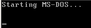
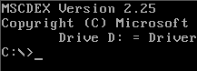
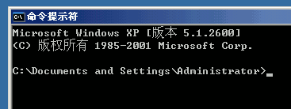
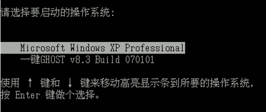
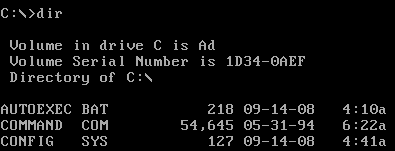
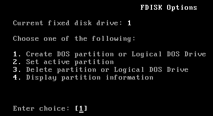
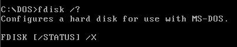

电脑操作基础
作者：TeliuTe 来源：基础教程网
三十七、DOS命令行 返回目录 下一课机子启动之前有一段是黑屏，使用ghost还原系统的时候，可能会碰到DOS命令行，下面我们来看一个练习；
1、安装DOS
1）DOS是一个操作系统，在Windows之前大多数机子上都安装有DOS，开机的时候，屏幕上出来“Start MS-DOS..”；
2）启动成功以后，会出来一个黑色窗口，一个光标小横线在一闪一闪；
；
3）在WinXP里面，点菜单“开始－所有程序－附件－命令提示符”，也可以打开一个黑色窗口，从而进入DOS；
；
4）DOS工具箱，在开机的时候按F8，会出来一个双启动菜单，选择第二个“一键Ghost”或者“超级DOS工具箱”，就可以进入到DOS程序界面；

2、使用DOS
1）DOS下面主要是键盘输入命令，输入命令后按一下回车键，
常用的命令有dir 查看文件夹，del 删除文件，cls 清除屏幕内容；

2）DOS下的应用程序，也可以输入文件名后按回车键执行，
例如ghost，fdisk 分区，format 格式化磁盘等；

3）退出DOS程序一般按ESC键，或者是依次按Alt-F-X键，其中的Alt键激活菜单，有些是输入命令： exit 或者 quit；
4）DOS命令的帮助一般是 readme 文件，也可以在命令后面跟上 /?，也可以显示命令的帮助；

本节学习了DOS的一些常见基本操作，如果你成功地完成了练习，请继续学习下一课内容；本教程由86团学校TeliuTe制作|著作权所有，商业用途请与作者联系
基础教程网：http://teliute.org/
美丽的校园……
转载和引用本站内容，请保留版权信息和本站链接。